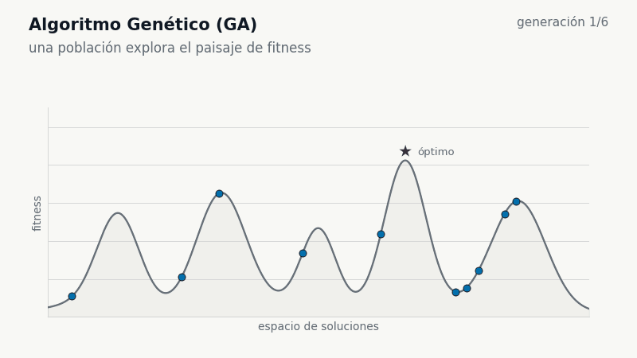
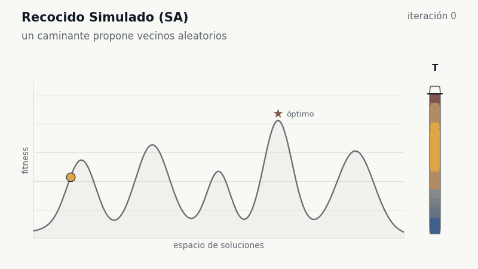
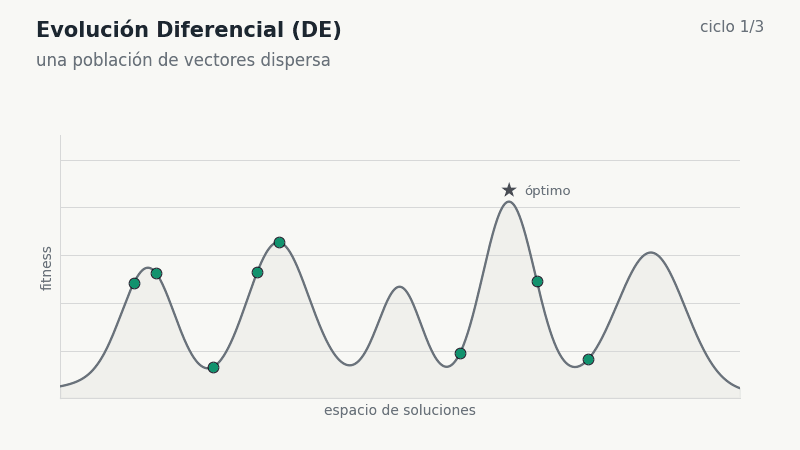
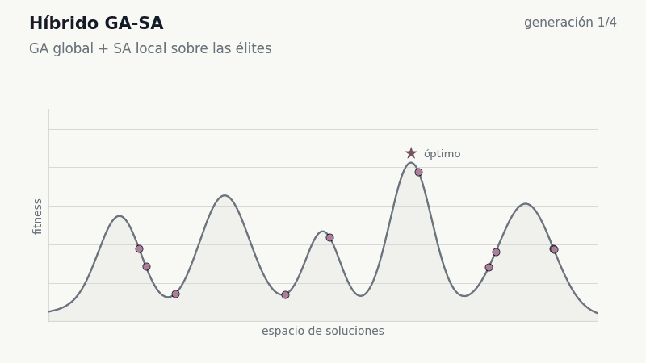
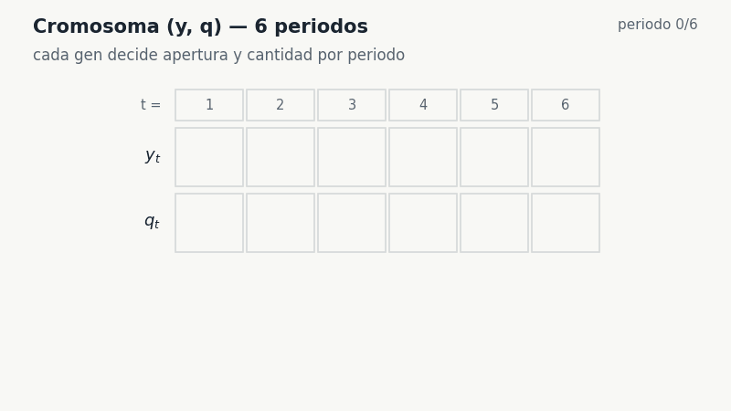
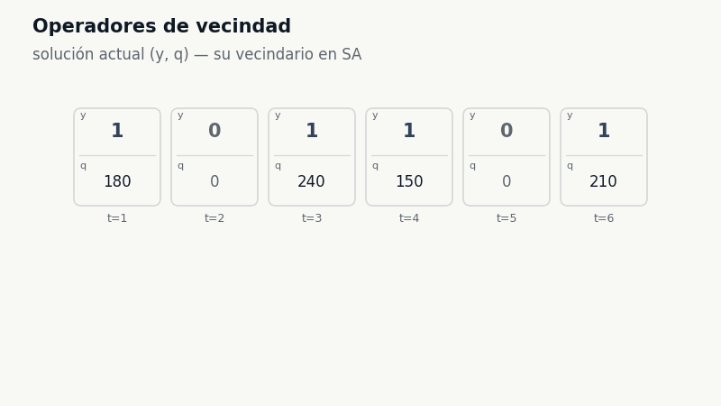
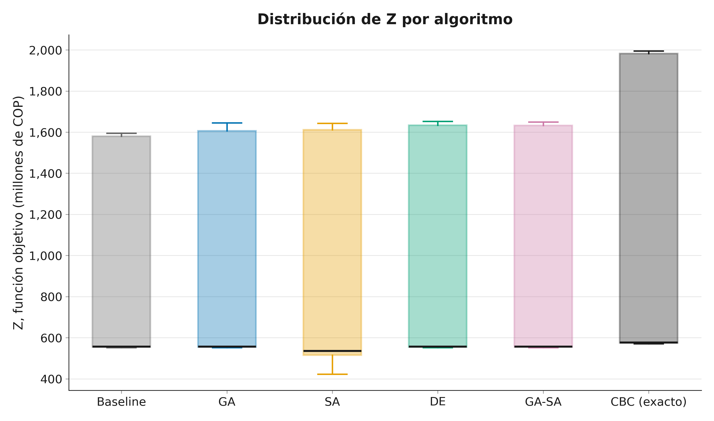
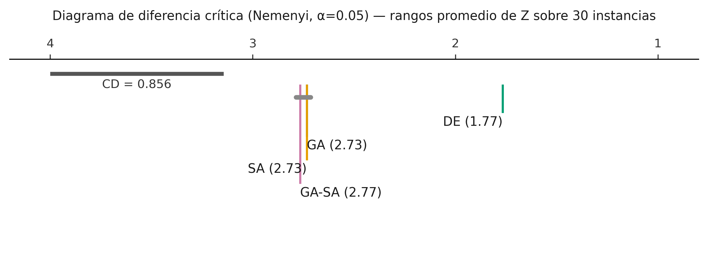
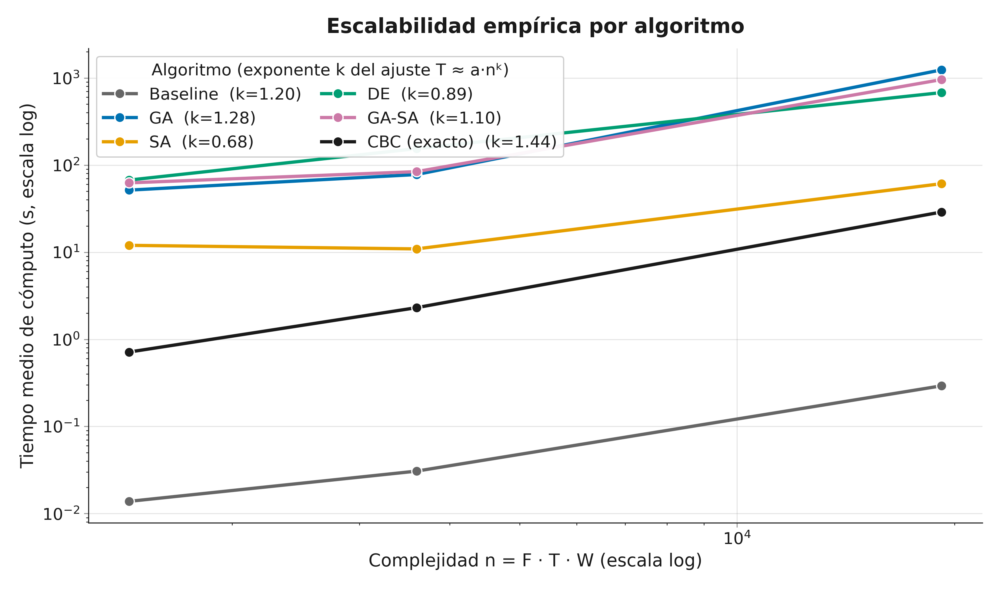

8 coproductos por carcasa (pechuga, muslo, ala, etc.) en proporciones fijas αp.
CLSP estocástico NP-hard: setup, perecibilidad y coproducción simultáneos.
Demanda heterogénea y estacional por corte.
Baseline vs GA-SA vs CBC exacto
Beneficio medio (M COP) por tamaño — campaña confirmatoria (v2). El plan trivial deja 10–29% sobre la mesa.
Idea clave: a esta escala, cada punto porcentual de eficiencia en el mix vale miles de millones de COP al año.
Acto I · El problema
2. La anatomía fija la oferta; el mercado exige otro mix
Push (Oferta)
Oferta rígida por anatomía de la carcasa.
Proporciones fijas de coproductos (αp).
No se puede producir solo pechuga.
Pull (Demanda)
Demanda estacional y heterogénea por corte.
Pechuga alta demanda, ala baja rotación.
Perecibilidad: vida útil Lp ∈ [3,7] periodos.
Consecuencias del desbalance
Consecuencia
Descripción
Impacto
Inventario excesivo
Productos de baja rotación se acumulan
Costos de almacenamiento
Pérdida por perecibilidad
Producto vencido = pérdida total
Reducción de margen
Demanda insatisfecha
Cortes de alta demanda agotados
Pérdida de ventas
Idea clave: no se puede producir solo pechuga — todo plan de producción administra el mix completo o paga el desbalance.
Acto I · El problema
3. El desbalance cuesta margen, inventario y desperdicio
Relevancia Económica
Consecuencia
Impacto estimado
Fuente
Costos de inventario excesivo
+15–25% del costo total
Sel et al. 2015
Pérdidas por ventas de liquidación
−20–40% del margen
Amorim et al. 2014
Desperdicio de producto perecedero
5–10% de la producción
Claassen 2016
Penalización por demanda insatisfecha
Variable por contrato
Solano-Blanco 2022
Alineación ODS
ODS 9 (Industria, Innovación e Infraestructura): Aplicación de técnicas avanzadas de optimización a la industria colombiana.
ODS 12 (Producción y Consumo Responsables): Reducción del desperdicio alimentario mediante planificación óptima.
Relevancia Metodológica
Primer framework que combina lot-sizing estocástico + coproductos + perecibilidad + metaheurísticas en la industria avícola.
Benchmark reproducible con instancias calibradas con FENAVI/DANE.
Idea clave: inventario excesivo, liquidaciones y desperdicio son costos evitables con mejor planificación — y alinean el estudio con los ODS 9 y 12.
Acto I · El problema
4. Tres hipótesis falsables sobre el valor de optimizar
¿Cómo optimizar la planificación de producción de coproductos avícolas bajo demanda estocástica, minimizando costos de inventario y maximizando el beneficio?
H1: La mejor metaheurística mejora Z en ≥ 5% vs baseline v1: No (0.6%–1.1%)v2: Soportada (20%–21%, p<10⁻⁴)
H2: GA-SA alcanza gap ≤ 2% vs mejor metaheurística individual v1: Sí (-0.02%)v2: Sí (+0.54%)
H3: Reducción de inventario ≥ 15% (endpoint primario: inventario promedio) v1: No (12%–17%)v2: Soportada (28%–31%, p<10⁻⁴)
Hallazgo central: el valor de la optimización depende del régimen económico. Régimen v1 (demanda > capacidad, setup marginal): una regla trivial es casi óptima. Régimen operativo v2 (setup costoso, holgura, demanda volátil): las mejoras hipotetizadas se confirman con potencia 1.000.
Lectura metodológica
Baseline: comparador de impacto operativo/negocio.
CBC exacto: comparador técnico de calidad (gap).
Objetivo: escalar con buena calidad, no superar al exacto.
Idea clave: las mismas tres hipótesis se contrastan en dos regímenes económicos — y el veredicto cambia con el régimen.
Acto I · El problema
5. Objetivos: formular, resolver, calibrar y validar en dos campañas
Objetivo General
Desarrollar un modelo de optimización para la planificación de coproductos en la industria avícola colombiana, resuelto mediante metaheurísticas.
OE1. Formular un modelo MILP multi-periodo con lot-sizing estocástico.
OE2. Implementar GA, SA, DE y el híbrido GA-SA.
OE3. Calibrar hiperparámetros con Optuna (TPE).
OE4. Comparar rendimiento en dos campañas: 9 instancias × 30 semillas (v1) y 30 instancias × 6 semillas con presupuesto igualado (v2).
OE5. Validar con datos FENAVI/DANE y análisis de sensibilidad.
Idea clave: del modelo formal (OE1) a la validación estadística (OE5), un pipeline completo y reproducible.
Acto I · El problema
6. Coproducción + perecibilidad + estocasticidad: un CLSP NP-hard
Producción Conjunta
Despiece genera P coproductos en proporciones fijas αp.
Decisión sobre un corte implica producción de todos los demás.
Clasificación OR: mezcla multi-producto con restricciones de co-producción (Gicquel & Miègeville, 2017).
Perecibilidad: vida útil Lp con política FIFO (Entrup et al. 2005).
Prog. Estocástica 2 Etapas
1ª etapa (here-and-now): setup yt y producción qt.
2ª etapa (wait-and-see): ventas vptω, inventario Iptω por escenario ω ∈ Ω.
F.O.: maximizar beneficio esperado sobre todos los escenarios (Birge & Louveaux, 2011).
Metaheurísticas (Clasificación)
Trayectoria (SA): intensificación local, aceptación probabilística de Boltzmann.
Población (GA, DE): diversificación global, operadores evolutivos.
Híbridos meméticos (GA-SA): exploración GA + explotación SA cada k generaciones.
Justificación del enfoque
Lote mínimo + setup + perecibilidad + estocasticidad: el problema es formalmente NP-hard (Mahdieh et al. 2018). En los tamaños estudiados (hasta ≈58,000 variables) CBC certifica el óptimo en segundos (small/medium) y hasta ~3 min (large); el valor de las metaheurísticas está en su comportamiento anytime (99% del óptimo en segundos), su escalabilidad al tamaño industrial real (52 periodos × 500 escenarios) y su flexibilidad para extensiones no lineales o multi-objetivo.
Idea clave: el valor de las metaheurísticas no es vencer a CBC, sino su comportamiento anytime y su escalabilidad al tamaño industrial.
Acto I · El problema
7. Ningún trabajo previo integra las cuatro dimensiones con coproductos
Búsqueda sistemática Scopus (feb. 2026): 8 queries temáticas → 478 resultados → 13 papers en la intersección directa.
≈1,100–58,000 variables (medido en CBC); v2 añade parvada mixta y setup 50M
Idea clave: setup y lote se deciden antes de conocer la demanda; el modelo optimiza su valor esperado sobre los escenarios.
Acto II · Modelo y algoritmos
9. Cuatro estrategias de búsqueda: población, trayectoria e hibridación
GA

Población → selección → cruce → mutación.
SA

Trayectoria con enfriamiento: T₀→Tmin.
DE

Mutación: v = xr1 + F·(xr2 − xr3).
GA-SA (Híbrido)

GA global + SA local cada k generaciones.
Idea clave: cuatro mecanismos de búsqueda distintos compiten sobre el mismo problema y en igualdad de condiciones.
Acto II · Modelo y algoritmos
10. Un cromosoma y un decodificador comunes hacen justa la comparación
Aplicación Universal: Este esquema y decodificador es utilizado de manera idéntica por GA, SA, DE y GA-SA.
1. Estructura del Cromosoma (Genotipo)
Vector unificado de 2T genes (dos puntos de decisión por cada uno de los \(T\) periodos). Combina variables de setup binarias (yt) y tamaño de lote continuas (qt):
y₁
y₂
...
yT
q₁
q₂
...
qT
Restricciones físicas mapeadas a cotas: qt ∈ [Qmin, Qmax].
2. Decodificador Greedy (Fenotipo)
Reparación factibilidad: Forzar yt = 1 si la demanda supera stock disponible.
Balance de Masas: Calcular coproductos xpt = αp · qt para cada parte.
Simulación Estocástica: Computar inventario FIFO a través de los |Ω| escenarios de demanda de la instancia (10–100).
Perecibilidad: Descartar producto excediendo vida útil Lp (Desecho).
Fitness: Esperanza matemática E[Z] de la utilidad neta.
Fuentes empíricas: Adaptado de la representación clásica de Lot-Sizing en agroindustrias.
Idea clave: al compartir representación y decodificador, la comparación mide algoritmos de búsqueda, no diferencias de implementación.
Acto II · Modelo y algoritmos
11. Vecindades que equilibran exploración y explotación en un espacio de 10³⁵
Cromosoma s = (y, q)

Codifica solo las decisiones de 1ª etapa: setup \(y_t \in \{0,1\}\) y lote \(q_t \in [Q^{min}, Q^{max}]\). Espacio de búsqueda ≈ 8.7×10³⁵ (T=12): la enumeración exhaustiva es imposible.
Operadores de vecindad

Ntoggle invierte bits de setup (saltos estructurales); Nquantity perturba cantidades (ajuste fino). Nmixta los combina probabilísticamente — usado por SA y GA-SA.
Exploración–Explotación
GA/DE diversifican vía población; SA intensifica con enfriamiento (Metropolis \(P = e^{\Delta/T}\)). GA-SA combina exploración global del GA con explotación periódica del SA sobre los top-k.
Idea clave: con ≈8.7×10³⁵ soluciones posibles, el diseño de la vecindad importa tanto como el algoritmo que la recorre.
III
La evidencia
«Dos campañas: una diagnóstica que falló con honestidad y una confirmatoria que respondió».
Acto III · La evidencia
12. Diseño experimental: 1,878 corridas en dos campañas
Factores y niveles
Factor
Niveles
Algoritmo
6 (GA, SA, DE, GA-SA, Baseline, CBC)
Tamaño
3 (Small, Medium, Large)
Semilla
30 réplicas independientes
Total v1
1,098 ejecuciones (+780 de la campaña v2 → 1,878)
Calibración (Optuna TPE)
30 trials por algoritmo sobre 5 instancias de calibración.
Función objetivo: maximizar Z promedio (3 small + 2 medium).
Timeout por trial: 900 s, con registro completo de trazabilidad.
Pruebas estadísticas
ANOVA + Tukey HSD (vista por corridas)
Friedman + Wilcoxon-Holm (bloques por instancia)
Contrastes one-sided contra umbral para H1/H2/H3
α = 0.05
Idea clave: calibración con Optuna, réplicas independientes y pruebas no paramétricas sostienen cada afirmación que sigue.
Acto III · La evidencia
13. Campaña diagnóstica (v1): la instancia pesa más que el algoritmo
Distribución Empírica (Z Global)
Varianza inter-instancia: El valor objetivo Z es altamente heterocedástico, dependiendo críticamente de la demanda pico y el tamaño de la instancia.
Dispersión entre semillas: GA/GA-SA/DE muestran baja variación en small/medium; SA mantiene mayor dispersión en las 9 instancias.
Ranking práctico: GA-SA y DE lideran en media, con diferencias prácticas pequeñas entre ambos.
Dato analítico: frente a CBC exacto, el gap medio de GA-SA/DE/GA es ~8.1–8.5% (mediana 3.43%); en H2, GA-SA vs mejor MH es -0.02%.

Idea clave: la varianza entre instancias domina (~10×) sobre la diferencia entre algoritmos: el ranking exige bloquear por instancia.
Acto III · La evidencia
14. Campaña diagnóstica (v1): el baseline trivial empata — y eso es un hallazgo
Algoritmo
Z̄ (COP)
Std Z
Rank
N
GA-SA
916,865,520
512,578,412
1
270
DE
916,484,283
512,072,980
2
270
GA
908,817,120
501,216,075
3
270
SA
883,217,511
522,140,338
4
270
Lectura estadística: ANOVA por corridas p=0.855 (no significativo), pero Friedman bloqueado por instancia p=0.0011 (significativo). Comparaciones Wilcoxon-Holm: SA vs {DE, GA-SA} significativas (p < 0.024). GA-SA ≈ DE en magnitud de efecto (Δ ≈ 0.024%).
Ranking práctico: GA-SA ≈ DE > GA > SA. La varianza inter-instancia domina (~10×) frente a la varianza inter-algoritmo.
Idea clave: el empate con el baseline no es un fracaso — delimita el régimen donde optimizar no paga y motiva la campaña confirmatoria.
Acto III · La evidencia
15. Contrastación formal (v1): H2 se sostiene; H1 y H3 no alcanzan el umbral
Pruebas Globales
Dócima
Estadístico
P-valor
Significancia (α=0.05)
ANOVA 1-way (corridas)
F = 0.259
0.8550
No significativo
Friedman (instancia)
χ² = 16.07
0.0011
Significativo
Wilcoxon-Holm (pares)
SA vs DE / GA-SA
< 0.024
Significativo
Shapiro-Wilk
varía
< 0.05 (varios casos)
No normalidad global
Nota: la vista por corridas queda dominada por heterogeneidad entre instancias; la vista bloqueada por instancia mejora la inferencia para ranking.
H1: Efectividad vs Baseline
No soportada en v1: mejora por instancia de 0.59%–1.10% (p=1.0 frente al umbral 5%). El baseline de capacidad máxima es casi óptimo en este régimen (potencia del diseño ≈ 0). Soportada en v2 (siguiente lámina).
H2: Sinergia Computacional de GA-SA
Soportada (calidad): gap medio = -0.02% (p=0.002 por instancia). El componente de tiempo (≤50% de CBC) no se cumple: la razón media por instancia es 4.7× (52.5× en v1), dominada por las small donde CBC resuelve en ~2 s; en tiempo total agregado GA-SA es comparable a CBC (≈1×).
H3: Inventario (primario + secundario)
No soportada en v1 (primario): no se alcanza 15%; baja rotación queda exploratorio por n informativo bajo. Soportada en v2 (28%–31%).
Idea clave: hay significancia estadística entre algoritmos, pero sin relevancia práctica frente al baseline en este régimen.
Acto III · La evidencia
16. Campaña confirmatoria (v2): 20% más beneficio y −30% inventario donde el setup importa
Diseño v2 (780 corridas)
30 instancias (10 por tamaño) × 6 réplicas — unidad estadística: la instancia (n=30 vs n=9).
Economía operativa: setup 50M COP/día, capacidad con holgura, demanda volátil → el óptimo apaga la línea 1–5 días.
Presupuesto igualado: 20,000 evaluaciones para las 4 MH (SA con reinicios).
Gap certificado: CBC probó optimalidad en las 30 instancias (best bound).
Gap vs óptimo certificado
Tamaño
Baseline
GA
SA
DE
GA-SA
Small
9.88%
4.84%
4.73%
4.98%
4.76%
Medium
23.02%
5.02%
5.19%
4.57%
5.16%
Large
28.55%
5.59%
5.80%
5.05%
5.91%
El baseline se degrada con el horizonte (9.9%→28.6%); las 4 MH re-calibradas convergen a 4.6–5.9%. Friedman p≤0.03 por estrato; Nemenyi: DE 1.77 (leve ventaja), GA/SA/GA-SA empatados 2.73–2.77 (CD=0.856).

Veredictos v2 (n=30, potencia 1.000)
H1 SOPORTADA: mejora 20.2%–20.8% vs baseline (p<10⁻⁴) · H3 SOPORTADA: inventario −28% a −31% · H2: GA-SA +0.54% vs mejor MH (≤2%). Con las 4 MH re-calibradas la paridad es el resultado: elegir el algoritmo importa menos que calibrarlo para el régimen. Anytime: DE alcanza el 99% del óptimo en 1.6/4.0/17.4 s (mediana; en large solo el 47% de corridas lo logra) — con CBC certificando el óptimo en 2/25/159 s.
Idea clave: donde el setup cuesta y hay holgura, optimizar rinde +20% de beneficio y −30% de inventario con potencia 1.000.
Acto III · La evidencia
17. Escalabilidad (campaña diagnóstica, v1): rapidez y calidad no coinciden en un único algoritmo
El perfil de desempeño muestra dominancia de SA en tiempo puro y mejor calidad de GA-SA/DE. La lectura es multi-criterio: rapidez y calidad no coinciden en un único algoritmo.
Cota Log-Log: Tiempo vs. Dimensión

Ajustes log-log por algoritmo: exponente empírico \(k \in [0.68, 1.28]\). Con solo 3 tamaños, es evidencia indicativa de escalamiento sub-cuadrático, no una ley definitiva.
Idea clave: SA domina en tiempo puro y GA-SA/DE en calidad — la elección depende del presupuesto de cómputo disponible.
Acto III · La evidencia
18. Convergencia (v1): la ganancia llega en las primeras evaluaciones
Datos reales: `comparison_traces.csv` y `complexity/convergence_profiles.csv`.
Ranking global
Idea clave: el grueso de la mejora se obtiene en las primeras evaluaciones — comportamiento anytime útil para decidir en segundos.
Acto III · La evidencia
19. Frontera de Pareto (v1): ninguna corrida domina calidad y tiempo a la vez
Cada punto representa una corrida; filtros en vivo por tamaño y algoritmo.
Idea clave: la frontera calidad-cómputo es el mapa para elegir algoritmo según el tiempo disponible en operación.
Acto III · La evidencia
20. Sensibilidad (v1): 100% de factibilidad bajo estrés de parámetros
Factibilidad 100% en sensibilidad y respuesta consistente ante variaciones.
Idea clave: los precios mueven el resultado (±12.7%) más que la variabilidad de la demanda (±0.35%) — y la factibilidad nunca se pierde.
IV
Qué significa
«El valor depende del régimen; la calibración pesa más que el algoritmo».
Acto IV · Qué significa
21. Limitaciones: qué afirma este estudio y qué no
Limitaciones Metodológicas
Datos sintéticos: Instancias calibradas con FENAVI/DANE, pero no son datos operativos reales de planta. La correlación temporal sin desfase es baja (|ρ| ≈ 0.19); con lags mejora a |ρlag| ≈ 0.65.
Baseline fuerte: Producir a Qmax resulta ser casi óptimo cuando demanda > capacidad, reduciendo el margen de mejora de MH.
Proporciones fijas: Se asume αp constante; no se modela variabilidad inter-lote en rendimiento de carcasa.
Limitaciones Técnicas
Sin scheduling: Solo se aborda lot-sizing diario; no el scheduling detallado de la línea de despiece.
Perecibilidad simplificada: Vida útil discreta (FIFO) sin deterioro gradual de calidad.
Implicación: Estas limitaciones no invalidan los hallazgos, pero definen el alcance de generalidad. La validación con datos operativos reales de planta sigue siendo necesaria.
Idea clave: los hallazgos son válidos dentro de su alcance declarado; la validación con datos de planta sigue pendiente.
Acto IV · Qué significa
22. El valor de la optimización depende del régimen
OE1 (Formular): Modelo MILP multi-periodo validado con CBC (óptimo certificado en todos los tamaños; ≈1,100–58,000 variables).
OE2 (Implementar): GA, SA, DE, GA-SA con reparación de factibilidad y convergencia.
OE3 (Calibrar): 30 trials Optuna por algoritmo, evaluados en 5 instancias de calibración.
OE4 (Comparar): dos campañas (1,098 + 780 ejecuciones, la segunda con las 4 MH re-calibradas y presupuesto igualado). En la confirmatoria las 4 convergen a 4.6–5.9% de gap (Nemenyi: DE 1.77 con leve ventaja; GA/SA/GA-SA empatados).
OE5 (Validar): Sensibilidad estable (precios ±12.67%, demanda ±0.35% en gap) y validación externa FENAVI útil: correlación mensual baja sin desfase, pero mejora al considerar lags temporales.
Hallazgo principal: el valor de la optimización depende del régimen económico. Con setup marginal y demanda > capacidad, producir a Qmax es casi óptimo; en el régimen operativo (setup costoso, holgura, volatilidad), las metaheurísticas mejoran el beneficio ~20% y reducen inventario 28–31% (p<10⁻⁴); re-calibradas, las cuatro convergen a ~5% de gap — calibrar para el régimen importa más que elegir el algoritmo — y alcanzan el 99% del óptimo antes de que CBC certifique.
Idea clave: la pregunta correcta no es «¿qué algoritmo gana?» sino «¿en qué régimen opera la planta y cómo calibrar para él?».
Acto IV · Qué significa
23. Contribuciones: un benchmark reproducible y una regla de decisión
Contribuciones
Modelo MILP original para coproductos avícolas con perecibilidad.
Framework comparativo con 4 metaheurísticas y baseline riguroso.
Evidencia empírica sobre metaheurísticas híbridas: bajo calibración justa por régimen, las cuatro estrategias alcanzan paridad (leve ventaja de DE) — la superioridad del híbrido reportada por Akbari-Aghghaleh et al. (2025) resulta dependiente de la calibración.
Conjunto de 39 instancias calibradas (FENAVI/DANE) en dos regímenes económicos, con perfiles de pollo mezclables en parvada.
Caracterización del régimen de valor: cuándo basta una regla trivial y cuándo la optimización aporta ~20% de beneficio (hasta 219M COP por horizonte en instancias grandes).
Código abierto Python reproducible con tests y pipeline Pandoc→PDF.
Trabajo Futuro
Híbrido DE-SA: Evaluar combinación DE + SA local (Akbari-Aghghaleh 2025).
Multi-objetivo: NSGA-II/MOEA-D (costo vs nivel de servicio).
Datos reales: Validación con datos operativos de planta procesadora.